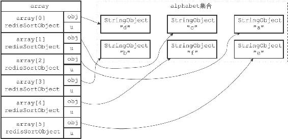
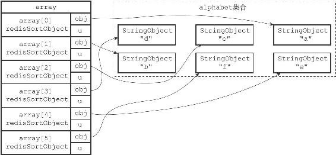

21.6 LIMIT选项的实现
在默认情况下，SORT命令总会将排序后的所有元素都返回给客户端：
redis> SADD alphabet a b c d e f
(integer) 6
#
集合中的元素是乱序存放的
redis> SMEMBERS alphabet
1) "d"
2) "c"
3) "a"
4) "b"
5) "f"
6) "e"
#
对集合进行排序，并返回所有排序后的元素
redis> SORT alphabet ALPHA
1) "a"
2) "b"
3) "c"
4) "d"
5) "e"
6) "f"
但是，通过LIMIT选项，我们可以让SORT命令只返回其中一部分已排序的元素。
LIMIT选项的格式为LIMIT
·offset参数表示要跳过的已排序元素数量。
·count参数表示跳过给定数量的已排序元素之后，要返回的已排序元素数量。
举个例子，以下代码首先对alphabet集合进行排序，接着跳过0个已排序元素，然后返回4个已排序元素：
redis> SORT alphabet ALPHA LIMIT 0 4
1) "a"
2) "b"
3) "c"
4) "d"
与此类似，以下代码首先对alphabet集合进行排序，接着跳过2个已排序元素，然后返回3个已排序元素：
redis> SORT alphabet ALPHA LIMIT 2 3
1) "c"
2) "d"
3) "e"
服务器执行SORT alphabet ALPHA LIMIT 0 4命令的详细步骤如下：
1）创建一个redisSortObject结构数组，数组的长度等于alphabet集合的大小。
2）遍历数组，将各个数组项的obj指针分别指向alphabet集合的各个元素，如图21-15所示。
3）根据obj指针所指向的集合元素，对数组进行字符串排序，排序后的数组如图21-16所示。
4）根据选项LIMIT 0 4，将指针移动到数组的索引0上面，然后依次访问array[0]、array[1]、array[2]、array[3]这4个数组项，并将数组项的obj指针所指向的元素"a"、"b"、"c"、"d"返回给客户端。
服务器执行SORT alphabet ALPHA LIMIT 2 3命令时的第一至第三步都和执行SORT alphabet ALPHA LIMIT 0 4命令时的步骤一样，只是第四步有所不同，上面的第4步如下：
4）根据选项LIMIT 2 3，将指针移动到数组的索引2上面，然后依次访问array[2]、array[3]、array[4]这3个数组项，并将数组项的obj指针所指向的元素"c"、"d"、"e"返回给客户端。
SORT命令在执行其他带有LIMIT选项的排序操作时，执行的步骤也和这里给出的步骤类似。

图21-15 将obj指针指向集合的各个元素

图21-16 排序后的数组